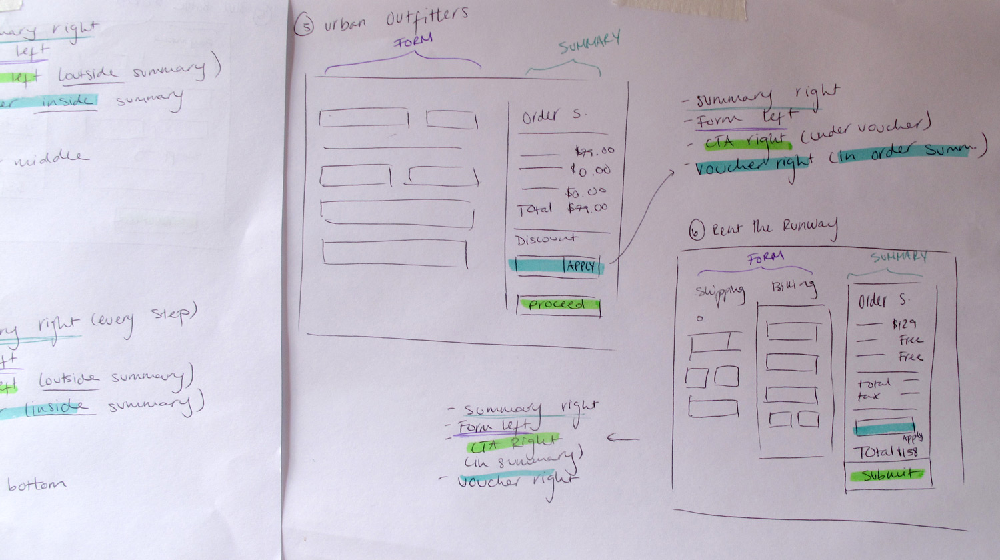

Marley Spoon is a food box subscription service. Through a 4 step sign-up process, you subscribe to receive a weekly box with 2 – 4 recipes along with all the pre-portioned ingredients necessary to cook them. While the product is explained in different parts of the website, it is unclear to a big portion of customers what they will get after signing up for the project. This is also due to the fact that some customers land directly on the sign-up flow without browsing through the website beforehand.
Sign Up Flow - Marley Spoon

Current sign-up page - Step 1
Tackling the issue
What would make it more clear to customers that they are subscribing to a product? How could we show our customers a preview of what they will receive without creating false hopes? Ultimately, what will help us acquire more customers during the sign-up process? These were the questions I began to ask myself and others in the product team. Then I decided to do a competitor analysis and see what other ecommerce sites were doing different than subscription services and vice versa.

Competitor analysis of sign-up flows part I

Competitor analysis of sign-up flows part II
After answering all the questions I had, I took the repeating patterns from similar business models and tried to see how they would work in our funnel. To do this, I sketched out a few versions of how our funnel could be re-arranged in order to improve the buying experience for our customers. I decided to make each screen on a separate paper so I could change the steps orders and see how they could work in different contexts.

Modular sketches for the sign-up process
From these sketches, I chose one of the directions that worked the most. If we could move the food preferences, currently shown after you sign-up, to the beginning of the funnel, then customers could get a better idea of what they will get, and the fact that they will receive this product more than once. In this way, we also ensured we could test a different version of the funnel by moving one feature from the end to the beginning rather then starting from scratch. This would allow us to check the performance of the funnel with one small change before investing the time to change everything at once. I made slightly different prototypes of the same idea and user tested them.
Prototype of Step 1 with taste preferences
Taste preferences expanded
Each user test was recorded and then analyzed. I sorted the most common themes and made a few changes to the prototypes in order to re-test them with different customers. The final outcome was that users did have a better idea about what they were receiving once they saw the taste preferences and they also felt like they had more control over the product they would receive.

Writing down the common themes from the user testing

Through Lookback, we recorded each user testing session

We filled in a detail form for each person who participated in the user testing
Final outcome
With a clear direction and customer feedback to back this up, I began to work on the UI. Unfortunately, due to a shift in priorities, the feature was never implemented but it was a great learning process and it can be easily tested in the near future.

UI changes to step 1 of the sign up flow

Components for step 1 made in Sketch
Sign up flow, steps 1 to 4